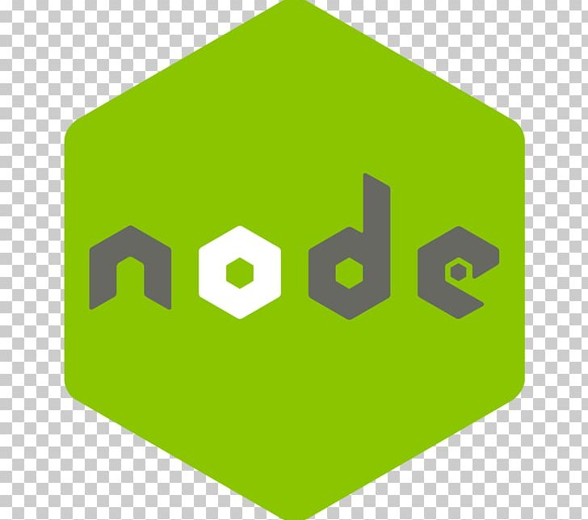
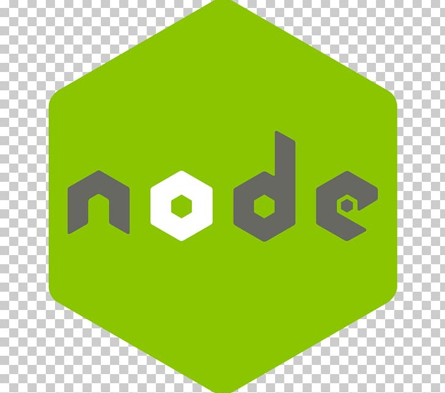

Purpose and Context:
FilmFlix is a web application developed using the MERN stack as part of my training at CareerFoundry's
full-stack immersion course. It serves as a showcase of my proficiency in full-stack JavaScript development.
Objective:
The primary objective of the project was to demonstrate my ability to develop a comprehensive full-stack web
application. I aimed to showcase my skills in both front-end and back-end development using the MERN stack.
Credits:
This project was undertaken solely by me as the project lead and developer. While I received guidance from my
tutors and mentors, all aspects of development were handled independently.
Duration:
The project spanned over 3 months, during which I completed server-side programming with Node.js and backend
setup, followed by client-side programming with React.js for frontend development.


 
Step 1: Project Initiation

Step 1: Project Initiation
- Purpose and Impact: Initiating the project laid the foundation for development, ensuring a structured environment.
- Importance of this Step: It enabled smooth project setup and dependency management.
- Technologies and Skills Employed: Utilized npm and npx for project setup and package management.
- What went well: Efficient completion of server-side programming and successful setup of backend architecture.
- Challenges and how I solved them: Addressed compatibility issues among dependencies by reviewing version requirements.
- Decision Process: Chose npm as the package manager to comply with course guidelines and industry standards.
Step 2: Backend Development (Node.js and Express.js)
- Purpose and Impact: Establishing the backend was crucial for server-side logic and API endpoints.
- Importance of this Step: It facilitated communication between frontend and database.
- Technologies and Skills Employed: Used Node.js and Express.js for backend development.
- What went well: Smooth backend setup with efficient routing and middleware integration.
- Challenges and how I solved them: Addressed optimization of database queries by analyzing execution plans and indexing strategies.
- Decision Process: Integrated Express.js for building RESTful APIs, aligning with MERN stack requirements and course objectives.
Step 3: Frontend Development (React.js)
- Purpose and Impact: Setting up frontend with React.js was essential for a dynamic user interface.
- Importance of this Step: It contributed to creating a user-friendly interface and enhancing user experience.
- Technologies and Skills Employed: Utilized React.js for frontend development.
- What went well: Smooth frontend setup with efficient component rendering and state management.
- Challenges and how I solved them: Addressed difficulties in integrating third-party libraries and managing state across components through debugging and testing.
- Decision Process: Chose React.js for frontend development due to its popularity and suitability for modern web applications.
Step 4: Database Setup with MongoDB
- Purpose and Impact: Configuring MongoDB was crucial for efficient data storage and management.
- Importance of this Step: It established a scalable database architecture to meet application's data requirements.
- Technologies and Skills Employed: Utilized MongoDB for database setup.
- What went well: Successful configuration and initialization of MongoDB collections and indexes.
- Challenges and how I solved them: Overcame challenges in designing optimal data schemas and implementing efficient querying strategies.
- Decision Process: Chose MongoDB for its scalability and compatibility with Node.js ecosystem.
 Conclusion:
Conclusion:
The development of FilmFlix provided valuable insights into full-stack JavaScript development. Through
overcoming challenges and making informed decisions, I enhanced my skills in backend and frontend
development, database management, and problem-solving. This project serves as a testament to my ability to
deliver a comprehensive web application within a specified timeframe.